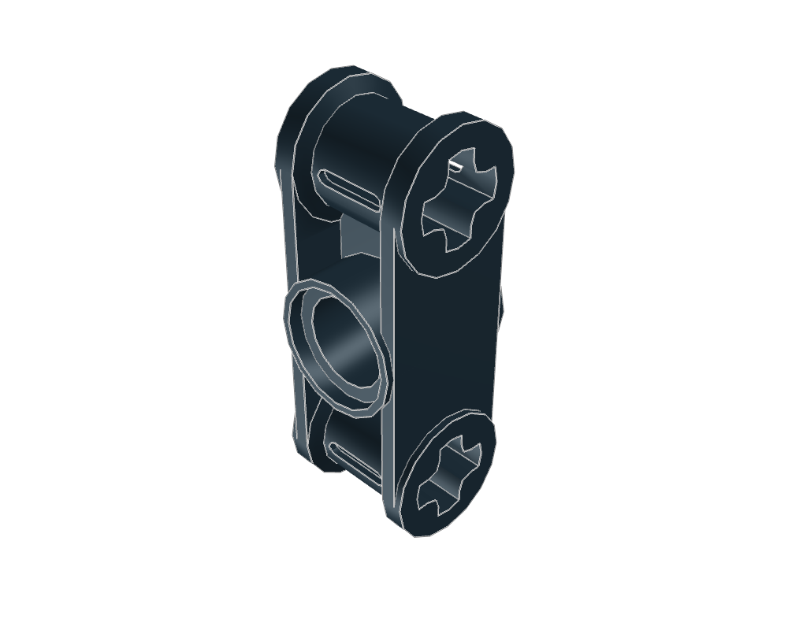
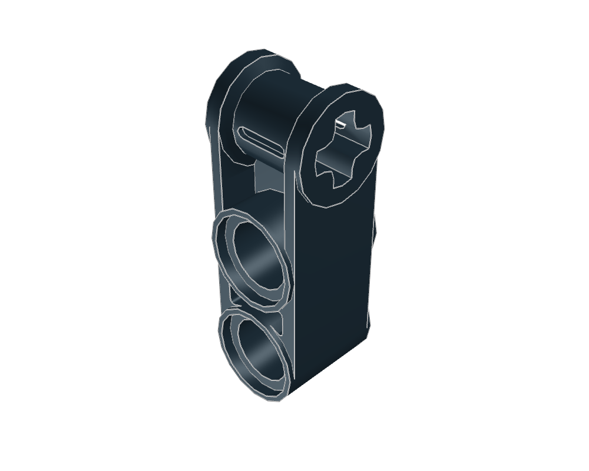
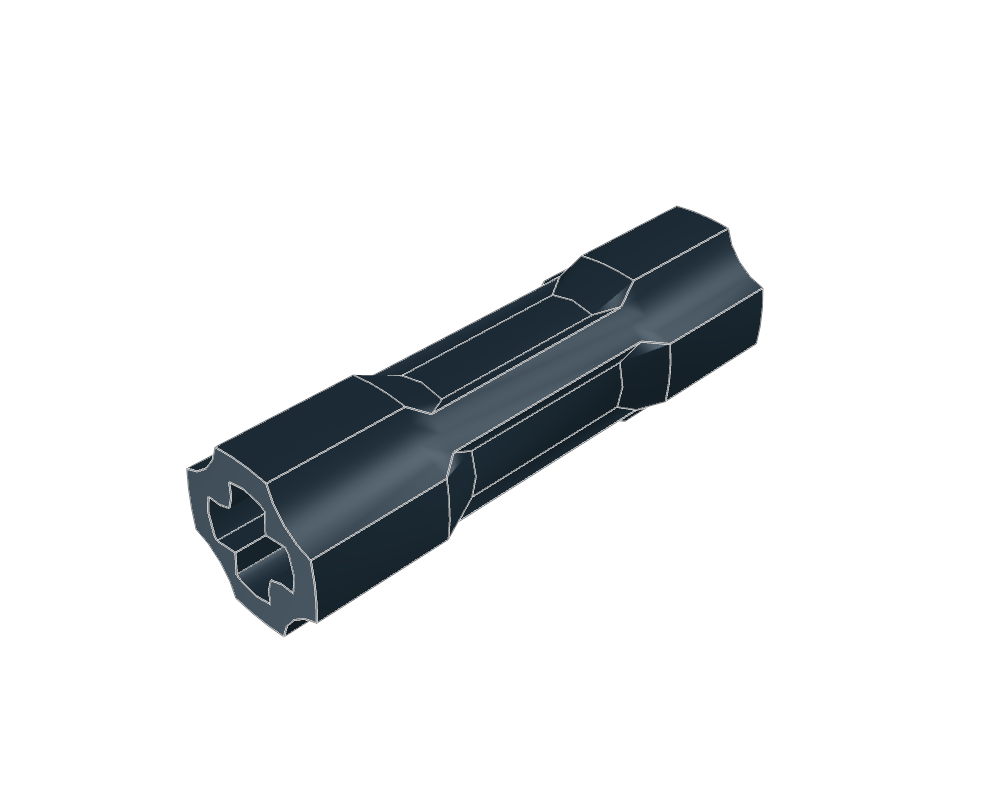
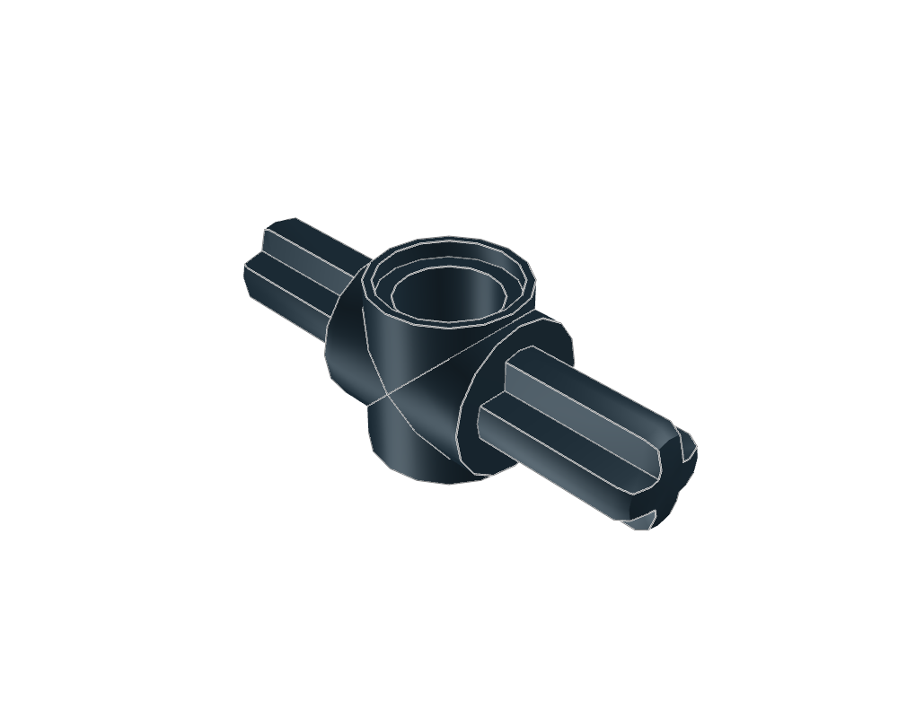
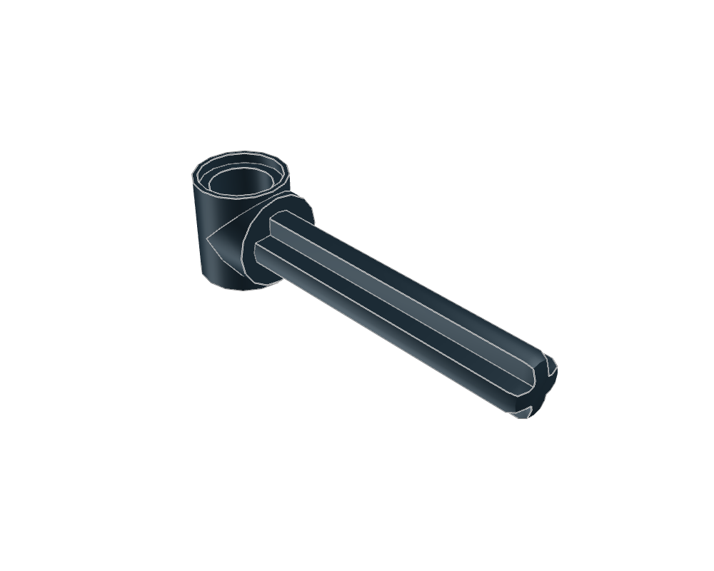
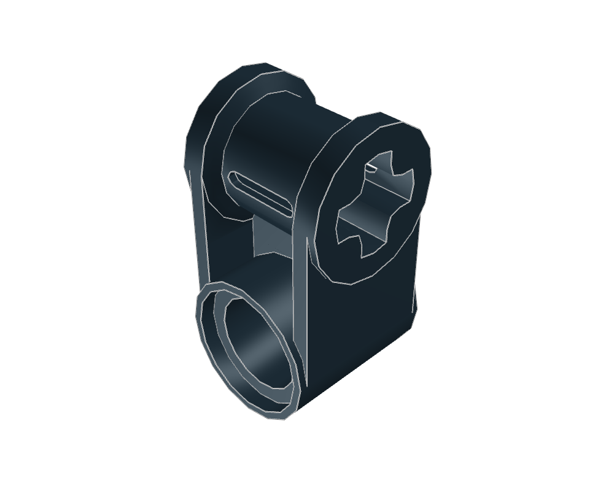

Technic Cross Block 1 x 3 (Axle/Pin/Axle)
3218432184.dat · 20 × 58 × 20 LDU
Inspect sourceActual library geometry. Each view is fitted independently: compare the listed dimensions, not image size. Bounds include studs and decoration; they are not stacking heights.

3218432184.dat · 20 × 58 × 20 LDU
Inspect source
4200342003.dat · 20 × 58 × 20 LDU
Inspect source
2628726287.dat · 17.448 × 17.448 × 60 LDU
Inspect source
2794027940.dat · 59 × 20 × 18 LDU
Inspect source
57135713.dat · 78.5 × 20 × 18 LDU
Inspect source
65366536.dat · 20 × 38 × 20 LDU
Inspect source